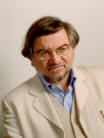

|
Autores / Authors |
-
BARBIERI, Marcello
E-mail: brr@unife.it

MARCELLO BARBIERI (b. 1940) has conducted research on embryonic development and ribosome crystallization at the Medical Research Council in Cambridge, UK, the National Institutes of Health in Bethesda, USA, and the Max-Planck-Institut für Molekulare Genetik in Berlin. He has published books on embryology and evolution (his major publications include ‘The Ribotype theory on the Origin of Life’ (1981), The Semantic Theory of Evolution (1985), and The Organic Codes. An introduction to semantic biology (2003)), and has taught biophysics, molecular embryology and theoretical biology respectively at the Universities of Bologna, Sassari and Turin. Since 1992 he has taught embryology and conducted research in theoretical biology at the University of Ferrara, Italy.